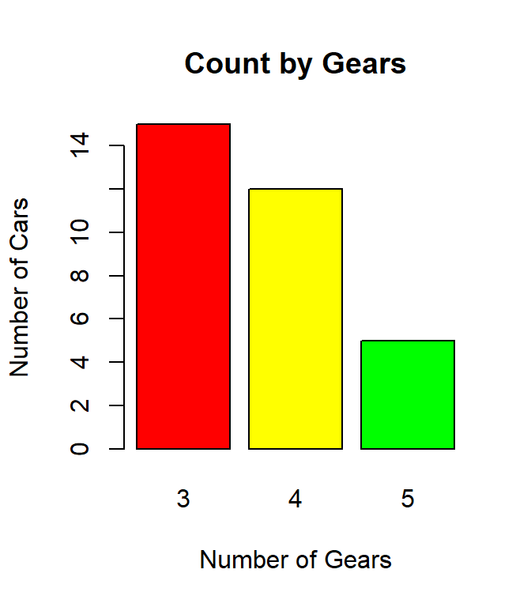

Lab 6 Visualizing Frequency
6.1 Introduction
Categorical data items are often reported using frequency tables where the number of times a particular survey item was selected is displayed. However, there are many ways to visualize frequency data and people using the plots introduced in this tutorial often find it easier to understand the underlying data than with a table.
6.2 Bar Plot
A bar plot is used to display the frequency count for categorical data. The following figure is a bar plot showing the number of automobiles with three, four, and five gears according to the mtcars data frame.

These types of visuals are more effective than a table full of numbers and they are easy to generate with R.
6.2.1 Demonstration: Bar Plot
The following script creates a simple bar plot. Note: this is one long R command that has been broken up over several lines to make it easier to understand.
- Line 2: This creates a bar plot using the
barplotfunction. The first argument sent to the function is the data source for the heights of each bar in the plot. In this case, R creates a table from the gears variable in mtcars and then uses that table as data input for the plot. All of the other lines in this script embellish the bar plot to make it more usable. - Line 3: The “main” attribute sets the main title for the bar plot. In general, for any graphic in R main is used to set the title of the graph.
- Line 4: This creates the label for the x-axis.
- Line 5: This creates the label for the y-axis.
- Line 6: This sets the color palette for the graph. In this case, the rainbow palette is used for the graph. Three colors were requested from that palette but specifying any number larger than three would have worked and created a slightly different palette. Experimentation is needed to find the most suitable palette for any given graph. (Note: More information can be found in the About Colors section in the appendix.)
6.2.2 Guided Practice: Bar Plot
Using the stackloss data frame, create a bar plot for Water.Temp. The plot should meet these specifications:
- Title: Water Temperature
- X-Axis lable: Number
- Y-Axis lable: Temperature
- Color: nine colors from the cm.colors palette
6.2.3 Activity: Bar Plot
Using the cafe data frame, create a bar plot for meal. The plot should meet these specifications:
- Title: Bar Plot
- X-axis label: Meal
- Y-axis label: Count
- Color: four colors from the topo.colors palette
Copy/paste the bar chart in the deliverable document for this lab.
6.3 Clustered Bar Plot
A clustered bar plot (sometimes called a “Grouped Bar plot”) displays two or more categorical variables. In general, clustered bar plots are best at showing relationships between variables but not so good for determining the absolute size of each variable. The following plot shows the number of passengers on board the Titanic when it sank. While it is easy to determine that there were a lot more males than females on board, it is not possible to read the exact bar height of, for example, third class males.
6.3.1 Demonstration: Clustered Bar Plot
The following script creates a clustered bar plot.
- Line 3: The first line of the script creates a custom color palette named colpal (for “color palette”), which, contains color codes. In this case, the colorRampPalette function will create the codes for color gradients between blue and white. More information about colors can be found in the About Colors section in the appendix.
- Line 5: This begins the
barplotfunction. It creates a table that contains the counts for cyl and gear in the mtcars data frame and then uses that table to produce the bar plot. Note the order of the variables in the table command. The grouping variable is listed second. In this example, the cars are grouped by gears and within each group the number of cylinders are displayed. The height of each bar is determined by the count of cars in each group. - Lines 6-8: These lines are essentially the same as for a simple bar plot as described above.
- Line 9: Setting legend to TRUE displays a legend in the corner of the plot. Whenever more than one variable is being plotted it is important to display a legend for the reader. In this case, the legend displays the colors used for the cyl variable.
- Line 10: A stacked bar is the default type of plot but Line 8 instructs R to create a plot with the variables beside each other. “Stacked” plots are described in the next section of this tutorial.
- Line 11: This rather odd-looking line adds a title to the legend, otherwise users would be confused about what the various colors used in the plot mean.
- Line 12: This selects three colors from the colpal variable created in Line 3.
6.3.2 Guided Practice: Clustered Bar Plot
Using the infert data frame, create a clustered bar plot for spontaneous grouped by education. The plot should meet these specifications:
- Title: Spontaneous Cases by Education Level
- X-Axis lable: Education Level
- Y-Axis lable: Count
- Color: three values from a custom palette using orange to white
- Legend title: Spontaneous
6.3.3 Activity: Clustered Bar Plot
Using the cafe data frame, create a clustered bar plot that shows the number of people who ate a given meal by sex. The plot should have three clusters (male, female, other) and each of those three clusters should have four meals (breakfast, lunch, dinner, other). The plot should meet these specifications:
- Title: Clustered Bar Plot
- X-axis label: Sex
- Y-axis label: Count
- Color: four values from a custom palette using dark green to white
- Legend title: Meal
Copy/paste the bar chart in the deliverable document for this lab.
6.4 Stacked Bar Plot
A stacked bar plot has one variable stacked on top of another. In general, these are very difficult to read and should only be used to make broad generalizations. Consider, for example, the following figure. This plot shows admissions for the University of California at Berkeley for six different programs. The top part of each bar (in brown) are the number admitted while the bottom part of each bar (in green) are the number rejected. Look at programs C and D. Were more students accepted in C or in D? Because these two values do not have the same baseline it is impossible to tell for certain which is larger.
6.4.1 Demonstration: Stacked Bar Plot
The following script is the same barplot function used in the clustered bar plots above, except beside = TRUE is missing. By default, bar plots are stacked in R so if the “beside” argument is missing (or set to “FALSE”) then the result will be a stacked bar plot.
It should be evident that the bar plot created in the above script is not very useful. While it is fairly easy to see that the number of 8-cylinder cars with three gears is much larger than the other categories, it is difficult to determine, for example, how many cars have five gears and eight cylinders. This difficulty is even worse when there are more than three levels for either of the two variables being plotted.
6.4.2 Guided Practice: Stacked Bar Plot
Using the infert data frame, create a stacked bar plot for induced grouped by education. The plot should meet these specifications:
- Title: Induced Cases by Education Level
- X-Axis lable: Education Level
- Y-Axis lable: Count
- Color: three values from a custom palette using purple to white
- Legend title: Induced
6.4.3 Activity: Stacked Bar Plot
Using the cafe data frame, create a stacked bar chart that shows the number of people who ate a given meal by sex. The chart should have three columns (male, female, other) and each of those three columns should have four meals (breakfast, lunch, dinner, other). The chart should meet these specifications:
- Title: Stacked Bar Plot
- X-axis label: Sex
- Y-axis label: Count
- Color: four values from a custom palette using goldenrod to white
- Legend title: Meal
Copy/paste the bar chart in the deliverable document for this lab.
6.5 Pie Chart
A pie chart is commonly used to display categorical data; however, pie charts are notoriously difficult to interpret, especially if the writer uses some sort of 3-D effect or “exploded” slices. The human brain seems able to easily compare the heights of two or more bars, as in bar plots, but the areas of two or more slices of a pie chart are difficult to compare. For this reason, pie charts should be avoided in research reports. If they are used at all, they should only illustrate one slice’s relationship to the whole, not comparing one slice to another; and no more than four or five slices should ever be presented on one chart.
The following figure shows the results of an experiment reported in the chickwts data frame to compare the effectiveness of various feed supplements on the growth rate of chickens. This figure illustrates the problem with pie charts. Notice that “casein” seems to promote growth better than “horsebean,” but it is impossible to determine if “casein” is better than “sunflower” from this chart.
6.5.1 Demonstration: Pie Chart
The following script creates a pie chart.
- Line 2: This starts a pie chart function. The “x” parameter is the data that needs to be charted. In this line, the feed variable in the chickwts data frame is extracted to a table since the pie chart function expects input in the form of a table.
- Lines 3-4: These lines define the main title and colors used for the pie chart. These parameters are the same as was seen in other graphs in this lab.
- Line 5: This tells R to use the labels used in the feed variable as the labels on the pie chart.
Note: The pie chart shows the number of chicks that were given a particular type of feed. Even though the pie “slices” are very nearly the same size there was a slightly different number of chicks on each type of feed.
6.5.2 Guided Practice: Pie Chart
Create a pie chart for the state.division data frame. NOTE: This data frame has only one vector so it is not necessary to use the $ operator. The chart should meet these specifications:
- Title: States by Division
- Color: nine colors from the topo.colors palette
- Labels: for each pie slice
6.5.3 Activity: Pie Chart
Using the cafe data frame, create a pie chart that shows the number of people who ate a given meal (breakfast, lunch, dinner, other). The chart should meet these specifications:
- Title: Pie Chart
- Colors: six colors from the terrain color palette
- Labels: for each pie slice
Copy/paste the pie chart in the deliverable document for this lab.
6.6 Heat Map
Heat maps use colors to depict the counts of variables and are commonly found around election time to depict how precincts are voting, red for republican and blue for democrat. They are also routinely used on weather maps to depict areas with the greatest probability for rain or snow. While heat maps can be displayed in a geographical format where, for example, the various states are shaded to represent some factor, they are also commonly seen as a grid. The following figure shows a heat map was taken from the swiss data frame and shows various socioeconomic indicators by province in Switzerland from 1888.
In a heat map produced by R, lighter colors represent larger numbers. Thus, the province with the highest fertility rate is Franches-Mnt since it has the lightest color and the province with the least agriculture is Courtelary since it has the darkest color for those variables. Interpreting the heat map can be a challenge for the researcher. In some cases a light color would be positive and in others negative. For example, the highest education level would be in Neuveville (positive) but the highest infant mortality would be in Porrentruy (negative). Also, the colors are often very similar and difficult to distinguish. For example, for examination, Cossonay has a numeric value of 22 while Aigle has 21. These two colors are slightly different but it would be difficult to detect that from the image. Often, the best that can be done with a heat map is identifying broad generalizations.
6.6.1 Demonstration: Heat Map
The following script creates a heat map for Party Size by Meal in the cafe data frame.
- Line 4: This line creates a contingency table from columns 8 and 4 of the cafe data frame and store that table in a variable named htbl. Those two columns contain the data requested for this heatmap, column 8 is the party size and column 4 is the meal.
- Line 5: R can store data in several different formats and many, like vector and data frame, are used by other labs in this manual. Heat maps require data to be in a matrix format and this line converts the htbl contingency table into a matrix named hmap.
- Line 6: This is the start of the heat map function. This line instructs R to create a heat map from the hmap matrix created in Line 5.
- Line 7: The main title of the heatmap is Cafe Ptysize by Meal.
- Line 8: The x-axis is labeled Meal.
- Line 9: The y-axis is labeled Ptysize.
- Line 10: This suppresses the row dendogram that is used to order the rows. The best way to see what this line does is to comment it out and re-run the script.
- Line 11: This suppresses the column dendogram.
- Line 12: Sets the heat map to scale the columns. In this way, the color for each column cell is calculated such that the entire column’s mean is zero and the standard deviation is one. The other option is to scale “row” and researchers would want to try both to see which provides a better heat map.
- Line 13: This sets the right and bottom margins. The values were found by simple trial-and-error to produce the most legible heat map.
The following script creates a heat map for the [USJudgeRating] data frame.
- Line 1: R can store data in several different formats and many, like vector and data frame, are used by other tutorials in this series. Heat maps require data to be in a matrix format and this line converts the first 20 lines, out of 43, in the data frame into a matrix named hmap. Notice how the first twenty lines in that data frame are specified, using [20:1,] which also reverses their order so they are alphabetized. Finally, x is the name of the parameter in the
as.matrixfunction that receives the input data. - Line 2: This is the start of the heat map function. This line instructs R to create a heat map from the hmap matrix. R designates the input variable for heatmap to be x.
- Line 3: The main title of the heatmap is US Judge Ratings.
- Line 4: The x-axis is labeled Characteristic.
- Line 5: This suppresses the row dendogram that is used to order the rows. The best way to see what this line does is to comment it out and re-run the script.
- Line 6: This suppresses the column “dendogram.”
- Line 7: Sets the heat map to scale the rows. In this way, the color for each row cell is calculated such that the entire row’s mean is zero and the standard deviation is one. The other option is to scale “column” and researchers would want to try both to see which provides a better heat map.
- Line 8: This sets the right and bottom margins. The values were found by simple trial-and-error to produce the most legible heat map.
Note that colors were not specified for this heat map. While a special color palette could be used, the default colors used by R work well.
6.6.2 Guided Practice: Heat Map
Create a heat map for the attitude data frame. The heat map should meet these specifications:
- Scope: Only the first 20 lines from the data frame should be used, like attitude[1:20,]
- Title: Clerical Employees Attitude
- X-axis label: Characteristic
- Y-axis label: Department
- Rowv/Colv symbols: NA
- Scale: row
- Margins: c(8,3)
6.6.3 Activity: Heat Map
Using the cafe dataset, create a heat map that compares the number of people dining at each meal (breakfast, lunch, dinner, other) for each day (Monday, Tuesday, etc.). The goal is to find the most/least popular meal for each day of the week. (Tip: day is column 3 and meal is column 4 in the data frame.) The chart should meet these specifications:
- Scope: This data frame is small so do not restrict the number of lines used, but specify the columns needed like cafe[,c(3,4)]
- Title: Heat Map
- X-axis label: Meal
- Y-axis label: Day
- Rowv/Colv symbols: NA
- Scale: column
- Margins: c(8,7)
Copy/paste the heat map in the deliverable document for this lab.
6.7 Mosiac Plot
A mosiac plot indicates the relative counts of items in a data frame by sizing areas on a grid. The following figure is a mosiac plot that indicates the relationship between the number of gears and cylinders in several cars in the mtcars data frame. Notice that 8-cylinder cars overwhelmingly have three gears while 4-cylinder cars tend to have four gears. This plot gives a quick visual representation of the relationships between categorical variables, just as a pie chart shows the relationship between continuous variables. A mosiac plot would suffer the same weaknesses as a pie chart and are, generally, rather difficult to interpret.
6.7.1 Demonstration: Mosaic Plot
The following script creates a mosiac plot.
- Line 2: A mosiac plot requires the input to be in table format so this line creates a table from the gear and cyl variables in the mtcars data frame. The data specification is entered as variable x in a plot.
- Lines 3-6: These are similar to those used for other graphics functions and should be fairly easy to understand.
6.7.2 Guided Practice: Mosaic Plot
Create a mosaic plot for the induced and education vectors in the infert data frame. The plot should meet these specifications:
- Title: Compare Induced and Education
- X-axis label: Number Induced
- Y-axis label: Education Level
- Color: five colors from the terrain.colors palette
6.7.3 Activity: Mosaic Plot
Using the cafe dataset, create a mosaic plot that compares the number of people dining at each meal (breakfast, lunch, dinner, other) to the rating for service (svc). The plot should meet these specifications:
- Title: Mosaic Plot
- X-axis label: Meal
- Y-axis label: Service
- Color: five colors from the terrain.colors palette
Copy/paste the mosaic plot in the deliverable document for this lab.
6.8 Deliverable
Complete the activities in this lab and consolidate the responses into a single document. Name the document with your name and “Lab 6,” like “George Self Lab 6” and submit that document for grade.